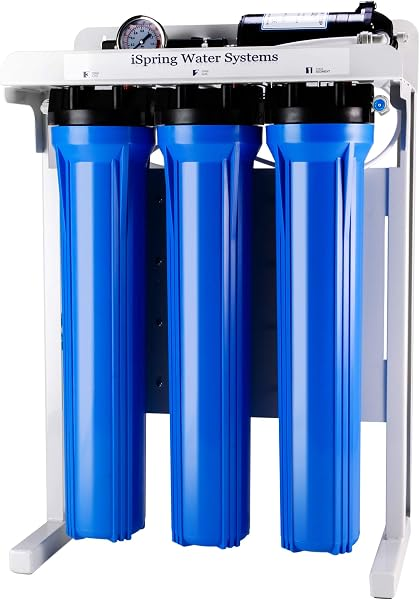
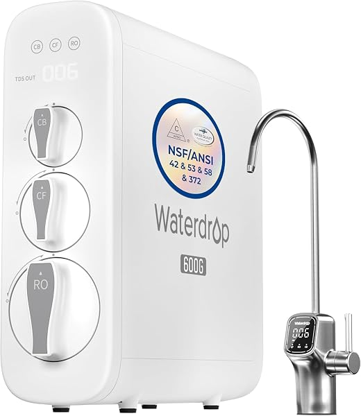
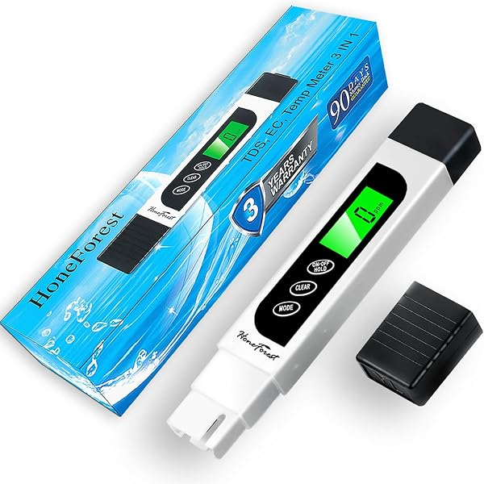
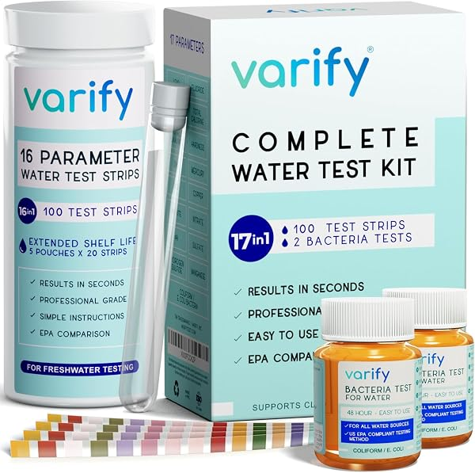
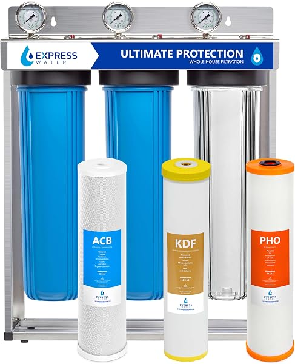
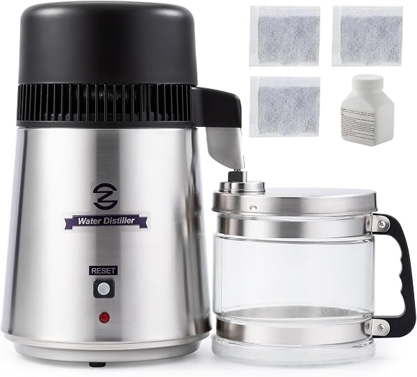
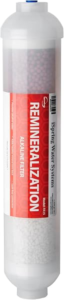

Plain-English explainers and decision guides to reverse osmosis and home water filtration.
If you are learning the category from scratch, start with what reverse osmosis water is, then read whether RO water is good for you, how well RO removes fluoride, and whether it removes microplastics. If you are already shopping, jump to wastewater ratios, remineralization filters, or RO vs spring vs distilled water.






